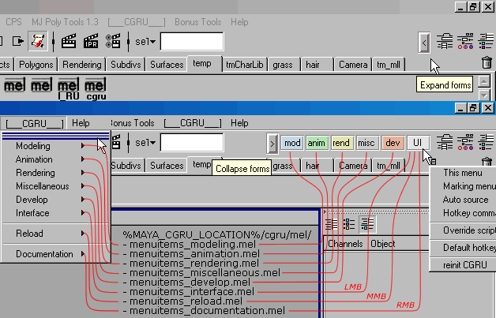
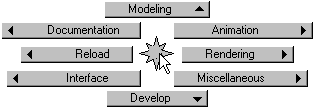
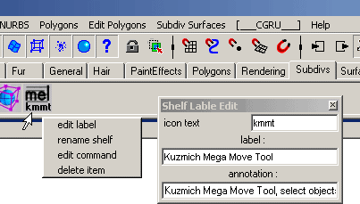
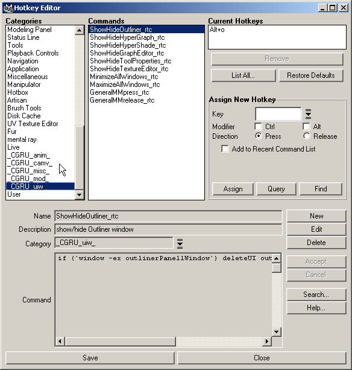

|
|
|
Features
Main maya menu. You can access CGRU scripts through maya main menu.
Quick Launch. You can access CGRU scripts Quick Launch Forms in Status Line in Maya Window.

General Markink Menu. You can access CGRU scripts through general marking menu, which available in maya Hotkeys Editor in "_CGRU_uiw_" category. Default hotkey is "Ctrl" + "Alt" + "Space".

For more comfortable usage you can put any menu item on shelf (hold "Shift" + "Ctrl" buttons and choose an item).
Shelves customization. By default when CGRU initializes it extend all items on all shelves attaching to them a RMB mouse popup menu. The menu allows fast ediding shelf items. When you create a new shelp item it is not extended by default. Double cklick shelf tab name to extend all it items.

Hotkeys. You can also edit CGRU scrpts hotkeys, which may clashing with yours.

Or use default hotkeys, stored in "cgru/mel/defaultHotKeysList.mel" file. You can source them through CGRU -> Reload -> Default Hotkeys.
| SourceForge.net Project | Раздел на форуме CGTALK.RU |